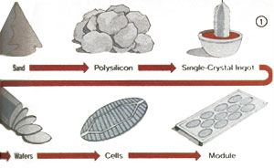

The Birth Of A Solar Cell
If you've ever wondered about the making of photovoltaic panels, this article includes a wealth of information, including crystal cultivation, assembling the module.
By TJ Byers
July/August 1982
If you've wondered about the making of photovoltaic panels, perhaps you'd like to attend...
Regular readers of this magazine are probably well aware that photovoltaics-the production of electricity from sunlight-is rapidly becoming a very practical alternative source of energy . . . and that solar cells are likely to play an important role in our future. Photocell installations are already popping up in great numbers, and-even today-can often beat out utility power in cost-effective applications. What's more, in some instancesthe 1,000,000-watt ARCO Solar plant that's expected to begin feeding power into Southern California Edison's lines by early 1983, for example-solar electricity has become a mainstream alternative.
To most of us, however, the workings of a solar cell remain cloaked in mystery. Which is why, in an effort to probe the "secrets" of photovoltaic construction, I recently toured the ARCO Solar facility in Chatsworth, California . . . where I was impressed by the level of technical sophistication required to produce each panel. (This is not an energy alternative that-as yet, anyway-is within the reach of the backyard researcher.) I'd like you to share my experience, so let's take a minitour through the fabrication process and witness the birth of a solar cell.
SANDSATIONAL
The photovoltaic cell is made primarily of silicon, which is the most abundant element on earth. (In fact, silicon's common form is everyday sand.) Unfortunately, in its naturally occurring state, silicon contains a number of contaminants that would seriously reduce photovoltaic performance, so the ore must be refined extensively before it can be used. In fact, by the time the processed mineral reaches the manufacturing plant, in the form of polysilicon rocks, it must be at least 99.9% pure.
However, polysilicon is amorphous (that is, it has no defined crystalline structure) and thus unsuitable for efficient cell operation. Therefore, it's necessary to convert the polysilicon into a perfectly structured crystal. And just how does one make a perfect crystal big enough to use in the preparation of a photovoltaic cell? The answer is simple . . . by growing it!
CRYSTAL CULTIVATION
First of all, a perfectly arrayed seed crystal is needed to form a basis for growth. This little crystal is attached to a support rod that's suspended above a ceramic crucible full of molten polysilicon. The shaft is turned by a small electric motor, and the spinning seed is lowered until it touches the surface of the hot liquid. As the seed rotates, silicon atoms attach themselves, using the tiny crystal's structure as a pattern for perfect alignment.
At the same time that the slowly forming "jewel" is growing larger, the seed is grad ually withdrawn from the silicon solution, thereby elongating the new crystal. Over the course of about 24 hours, a crystalline cylinder about 4 inches in diameter and 20 inches in length is produced. Amazingly, during the entire day-long period the temperature of the "raw" silicon must not vary more than 2 °C above or below silicon's melting point of 1420°C (2588°F)!
The fully grown crystal now goes to a grinder, where irregularities are removed and the cylinder is turned down to exactly 4 inches in diameter. Then the ingot is clamped in a vise and sliced into wafers, each of which is only about 0.020" thick. Unfortunately, the abrasive cutting blade produces a considerable amount of waste almost three-quarters of the original cylinder is reduced to dust when the crystal is cut!
The next step in the production process is a chemical treatment that removes blade marks (produced by the slicing) from the faces of the disks. Sodium hydroxide (household lye) smooths the silicon surfaces, and then the caustic element is neutralized with a sulfuric acid rinse. Once the wafers have been ultrasonically cleaned and inspected, they're ready to have their electrical components applied.
The actual process of converting sunlight into electricity takes place in a semiconductor junction that's formed on one surface of the cell. This thin layer is created by placing N-type semiconductor silicon over the face of the cell through a process called diffusion.
The wafers are first put in a quartz tube of about 8 inches in diameter and heated to 850°C (1562°F). The system is purged with inert, dry nitrogen to remove all oxygen, and a measured amount of phosphorus is injected into the tube.
Once in place, the phosphorus molecules disassociate under the intense heat and force themselves into the silicon's crystal structure, displacing silicon atoms as they do so. The penetration is very shallow, though . . . on the order of about 20 microns. (To give you a better idea of just how small that dimension is, consider that a micron is 1/1,000,000 of a meter, or slightly less than 1/25,000 of an inch!)
During diffusion, two disks are placed back to back to avoid forming a junction on both sides of the cells. However, a junction is formed around the thin outer edges of the disks, and it must be removed to prevent the cells from shorting out. The units are placed in what's called a plasma etch chamber, which trims back the perimeter enough to remove the unwanted material.
At this point the cell has become a genuine photovoltaic generator and will produce electricity if exposed to sunlight. Now, it's necessary to attach metallic contacts to the cell's surface for removing the useful electrons. This is accomplished by printing the cell's face-using a silk-screen pattern-with a grid of metallic ink. The grid wires are then baked into the surface to complete the negative connection, and the back of the wafer is coated with the same material (without the pattern) to form the positive contact.
ASSEMBLING THE MODULE
Completed photovoltaic cells are grouped together in modules, both to boost available voltage and power (a single cell's output is relatively low) and to protect the units from the elements. Because silicon is slightly hygroscopic (that is, it absorbs water), careful hermetic sealing is just as important as is shielding the cells from impact. In fact, the life expectancy of a solar panel is directly related to how well it's sealed.
The module assembly process begins with the cells' being tested and grouped according to output current. Then units of similar capacity are electrically connected with ribbon wire, by soldering the front contact of one cell to the back of the next. This series wiring allows each cell to contribute about 1/2 volt to a panel's total output.
The array is then set face down on a piece of tempered low-sodium (for maximum solar transmittance) glass, over which has been stretched a thin sheet of polyvinyl butyl (PVB) plastic. When another sheet of PVB is placed on top of the assembly, the cells become sandwiched between two waterproof layers.
Once the power leads have been routed through two small slits in the plastic backing, a heavy sheet of white Du Pont Tedlar plastic (which is impervious to moisture) is laid over the back of the array as further insurance against water penetration. The final layer is a sheet of metal (such as steel or aluminum) fitted over the back to protect the panel from damaging blows.
To remove any moisture, the module is set into a laminating press, and trapped air is pumped from between the layers. Pressure is then applied to compress the assembly, and the temperature is raised to a point at which the PVB becomes slightly viscous . . . allowing it to flow into and fill the void between the cells.
After the module has cooled, a bead of silicone sealant is run along the edges of the thin panel, and a sturdy metal frame is wrapped around the 3/8"-thick assembly. The housing will not only protect the module, but also carry heat away from it when the unit is finally placed under the intense rays of the sun. The finished panel is tested once more for output and is then ready for shipping.
As you can see, the manufacture of photovoltaic panels isn't a backyard technology that's being exploited by big business. In stead, it's a fitting task for big industry . . and delivers a product that may soon be found in many of our back yards.
|
 |
 |
|